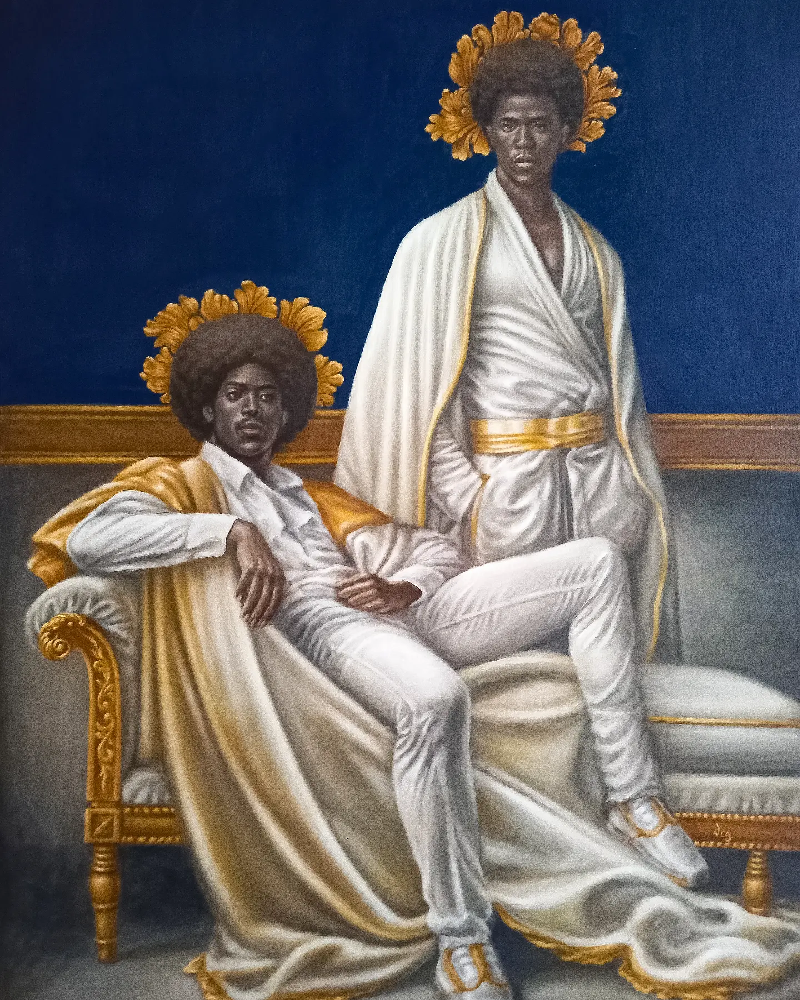
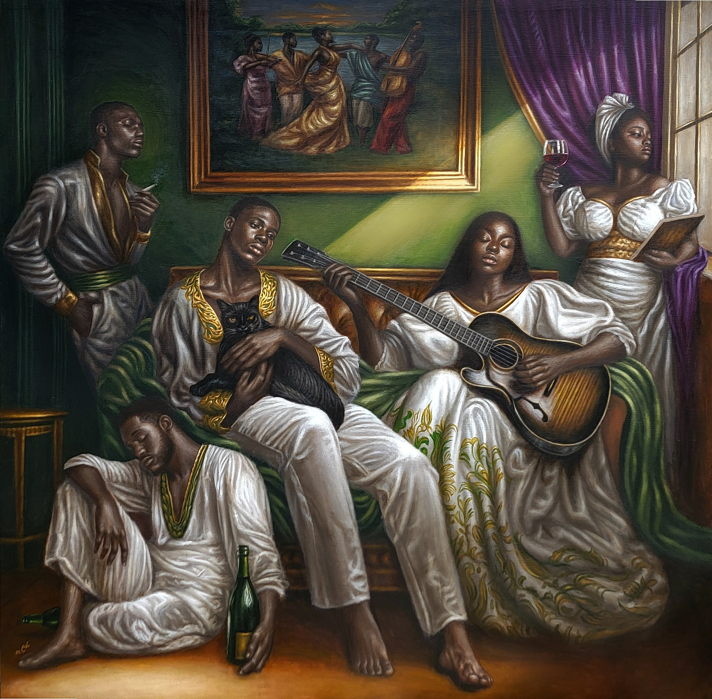
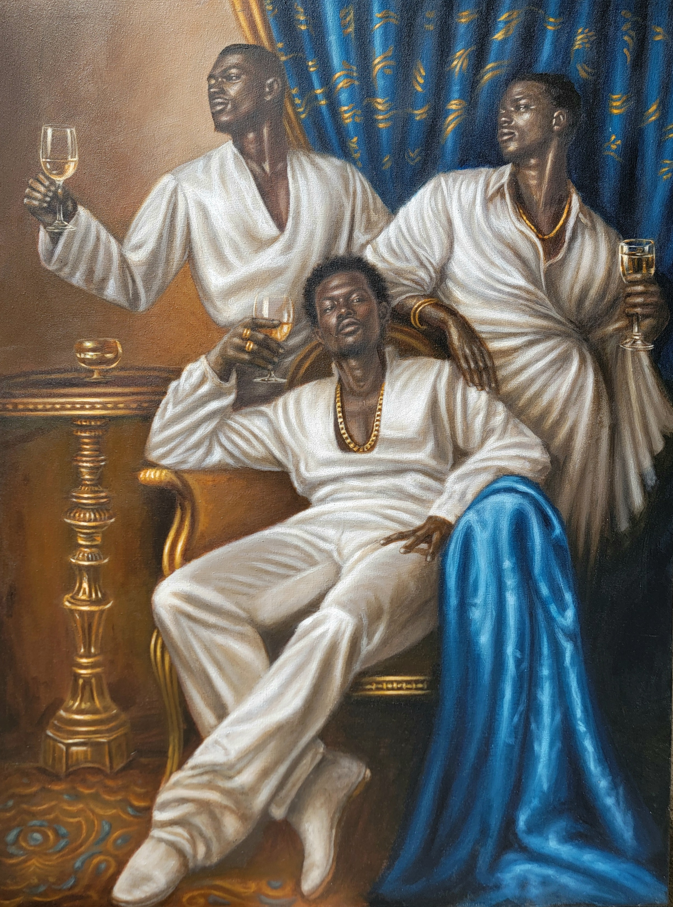
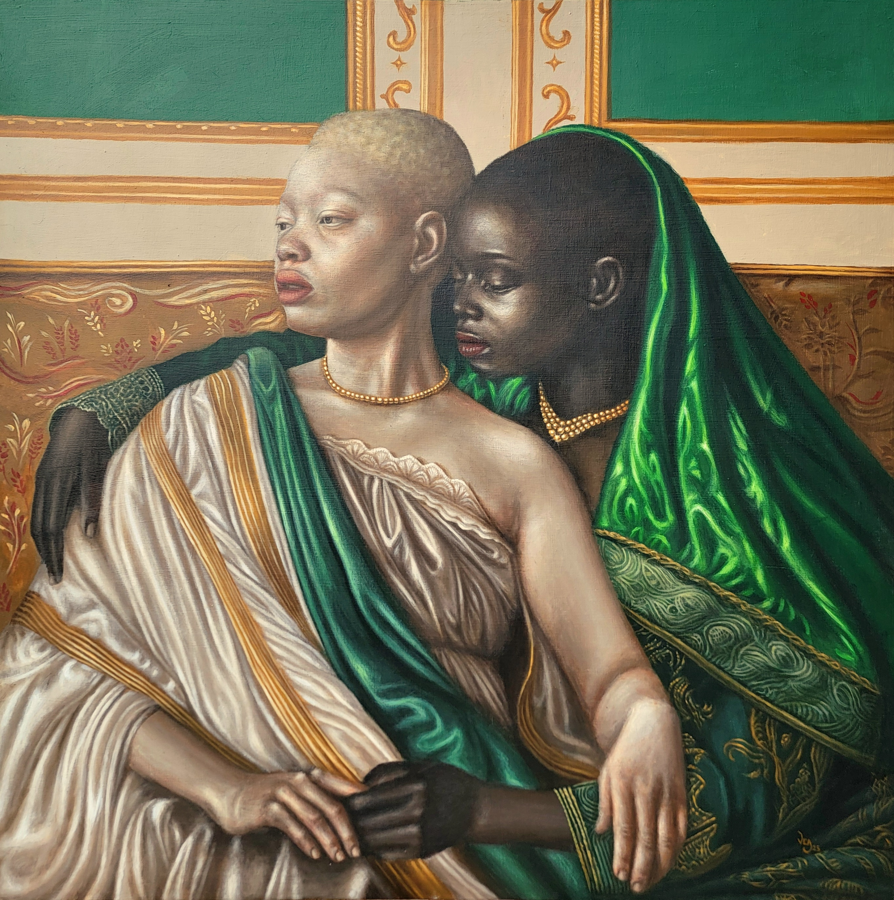
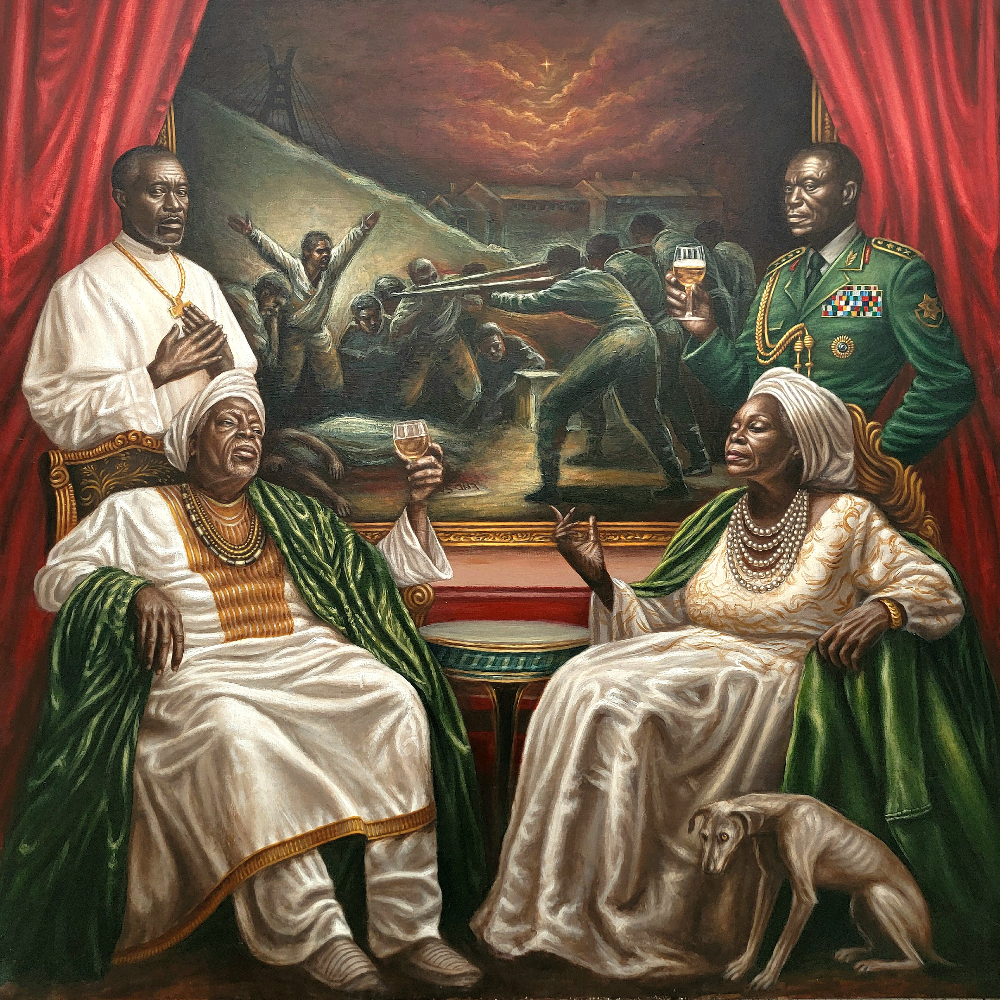
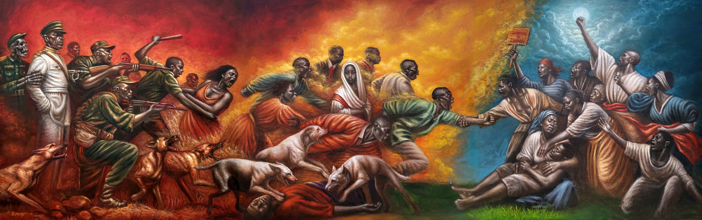

Art
VICTOR ANACHUNA
THE ARCHITECTURE OF THE HUMAN SPIRIT
SIN OF FEAR
Acrylic on Canvas • 2023

This piece contemplates the psychological toll of our time, not as spectacle, but as shared experience.
MELANCHOLY
In Melancholy, the weight of the present world presses down on its youth, a generation suspended between survival and uncertainty. The piece explores how young people navigate a world darkened by political unrest, socio-economic instability and collective grief at the helplessness of it all. Each figure, holding an object that serves as a personal tether, a coping mechanism, symbolic of reflection and escapism.
Their expressions and postures detached, heavy with introspection. Shadows cradle their bodies, as light leaks in bringing hope to those in its reach, creating the tension between despair and endurance. Melancholy offers no resolution, but rather sits in the ache, acknowledging that to feel deeply in a fractured world is, itself, a form of defiance.
MELANCHOLY
Acrylic on Canvas 60 by 60 inches • 2025

BROTHERHOOD
Acrylic on Canvas 36 by 48 inches • 2025

BROTHERHOOD
Brotherhood is a tribute to the strength and solidarity shared between Black men. Depicting a moment of camaraderie, this piece shifts traditional portrayals of Black masculinity often rooted in machismo or emotional distance. Instead, it centers care, presence, and mutual support.
As the figures rest in one another’s company, Brotherhood becomes a visual affirmation of community and a celebration of what it means to belong, to uplift, and to be held in dignity. As part of a larger body of work that explores identity and solidarity, the piece celebrates what it means to be seen and to stand together with a shared bond.
THE EMBRACE
Acrylic on Canvas • 2025

INTIMATE INTERSECTIONS
Returning to the quietude of personal connection, Anachuna’s exploration of identity shines in its tenderness. The contrast in skin tones, illuminated by soft, naturalistic light, celebrates the expansive spectrum of the diaspora.
It is an exploration of lived truth, avoiding performative statements in favor of capturing genuine, quiet dignity. His meticulous attention to the textural contrast of skin and the rich, flowing fabrics anchors his subjects in an undeniable regality.
BEHIND THE CURTAINS
Acrylic on Canvas 60 by 60 inches • 2025

In October 2020, peaceful protesters gathered at the Lekki Toll Gate in Lagos, Nigeria, demanding an end to police brutality under the banner of #EndSARS. They raised their voices, waved flags, and sang the national anthem, and were met with gunfire. What followed was a massacre, covered up by a campaign of silence and denial.
“Behind the Curtains draws from this moment in history, confronting the brutal divide between power and vulnerability... Though detached from the reality of the oppressed, the elites remain complicit in the bloodshed.”
PREDATOR. PREY. PROTEST.
Triptych 180 by 60 inches • 2025

PREDATOR. PREY. PROTEST.
This triptych unfolds an evocative narrative of oppression, survival, and resistance. In the first panel, Predator, we witness the brutality of power unchecked—rampaging military forces become stark symbols of institutional violence and systemic control. The scene is cast in an arresting red, a hue of alarm and bloodshed. They descend upon a people long dehumanised, their lives rendered disposable in the eyes of politics and power.
The story spills into Prey, where the hunted become refugees escaping an oppressive regime. Set against a corrosive sky, the scene tightens as predators tear through civilians. Then comes Protest, the final act. Here, bodies no longer flee but form a barricade. Protesters face down the same forces that once scattered them.
PRESENCE AND ENDURANCE
Stripped of unnecessary complexity, the figures demand to be seen purely as they are. The vibrant red grounding the subjects speaks to the lifeblood and endurance of the human spirit. It is an architecture of emotion, built on the foundations of shared Nigerian heritage and universal resilience.
SIN OF FEAR
Acrylic on Canvas • 2023